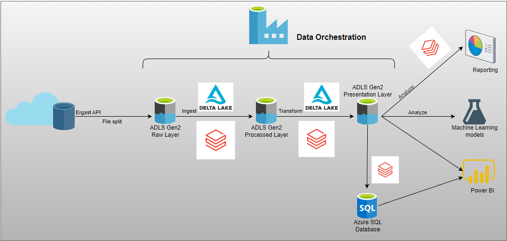
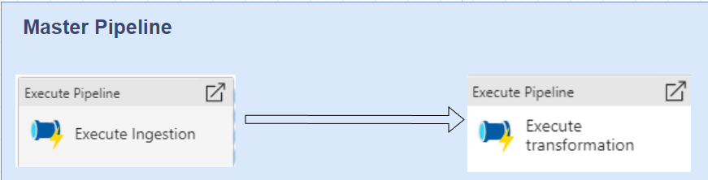

This project aims to build a data pipeline which is scheduled and triggered by Azure Data Factory for historical and up-to-date Formula1 data.
Databricks and Delta Lake were used to implement a solution using Lakehouse architecture.
This is a good use case for Delta Lake, as it provides versioning and time travel capabilities to the data. By using Delta Lake, we can easily go back in time to see how the data looked at a specific point in time, and can also create new versions of the data as it changes over time. The approach is using PySpark in Databricks notebook to analyze the yearly race results and calculate the points for each team/driver based on their position. By doing this, we can determine the most dominant drivers/teams over specific time, which is valuable information for fans, sponsors, and teams.
1. The initial data was obtained from the Ergast API, and subsequently tailored to suit the requirements of the project. Following this, the data was stored in DataLake Azure ADLS Gen2, where it was arranged according to the relevant event dates. The transformed data was then saved in both Delta Lake and Azure SQL Database.
2. Using databricks, data must be ingested into a Delta lake in delta formats, transformed into tables for reporting and analysis, and made available for machine learning/reporting and copy to Azure SQL database.
3. Data pipelines must be scheduled, monitored, and alerts set up for pipeline failures.
Detail codes can be found in my Github repository here. This project takes its inspiration from 2 Udemy courses: https://www.udemy.com/course/learn-azure-data-factory-from-scratch/ and https://www.udemy.com/course/azure-databricks-spark-core-for-data-engineers/.
Project Requirements
- Data Ingestion Requirements
The task is to load historical F1 data into data lake Azure ADLS Gen2 in various formats and apply the appropriate schema to the data. The ingested data must have audit columns such as the ingested date and the source, and must be stored in Delta columnar format. The ingested data must be made available for various workloads, including machine learning, further transformation, BI reporting and analytical workloads via SQL. Additionally, the ingestion logic must be designed to handle incremental data loads.
- Data Transformation Requirements
The requirements include combining required data items into transformed table for reporting/analysis purposes, adding audit columns to the transformed tables, and storing the transformed data in Delta format. The transformed data must be made available for various workloads, such as machine learning, BI reporting, and SQL analytics. Finally, the transformation logic must be designed to handle incremental loads.
- Data Analytical Requirements
The tasks include determining the most dominant drivers and teams over the last decade and all-time in Formula1, ranking them by dominance
- Data BI Reports Requirements
- Produce driver and constructor standings for current and past years.
- There is a predetermined set of data elements that should be used for the BI reporting. These data items could include specific metrics, dimensions, or other relevant information that is necessary for the analysis. The list of data items could be based on the organization's needs and requirements, industry standards, or other factors. By using a defined list of data items, the BI reporting can be standardized and consistent across different reports and analyses.
- Scheduling Requirements
- Schedule pipelines to run at 11.30 p.m. every Sunday.
- Monitor pipeline status and re-run failed pipelines and set up alerts on failures.
- Set up alerts for pipeline failures.
- Enable time travel and ability to query data based on time.
- Roll back data to previous versions in case of issues.
Solution Architecture
- The architecture includes three layers: the raw layer(Bronze layer), the processed layer(Silver layer), and the presentation layer(or Gold layer).
- Data will be uploaded to raw layer in csv/json format and ingested using Databricks Notebooks before being stored in the processed layer in delta format.
- The processed layer will include schema and partition information as well as additional audit information.
- Transformed data will be stored in the presentation layer in Delta format.
- Azure Data Factory will be used for orchestration, scheduling and monitoring the pipelines.
The below image represents the solution architechture for this project:

The pipeline architecture is based on industry research and best practices, with reference to similar architecture from Microsoft and Databricks.
Environment setup
- Azure subcription
- Azure Data Lake Storage Gen2
- Azure Data Factory
- Azure SQL Database
- Azure Key Vault
- Azure Databricks
- Create, configure and monitor Databricks clusters
- Configure Databricks to use the ABFS driver to read and write data stored on Azure Data Lake Storage Gen2 using secrets stored in Azure Key Vault. A Pyspark function was used to mount the AZure ADLS Gen 2 to Databricks.
def mount_adls(storage_account_name, container_name):
# Get secrets from Key Vault
client_id = dbutils.secrets.get(scope = 'formula1-scope', key = 'formula1-app-clientid')
tenant_id = dbutils.secrets.get(scope = 'formula1-scope', key = 'formula1-app-tenantid')
client_secret = dbutils.secrets.get(scope = 'formula1-scope', key = 'formula1-app-client-secret')
# Set spark configurations
configs = {"fs.azure.account.auth.type": "OAuth",
"fs.azure.account.oauth.provider.type": "org.apache.hadoop.fs.azurebfs.oauth2.ClientCredsTokenProvider",
"fs.azure.account.oauth2.client.id": client_id,
"fs.azure.account.oauth2.client.secret": client_secret,
"fs.azure.account.oauth2.client.endpoint": f"https://login.microsoftonline.com/{tenant_id}/oauth2/token"}
# Unmount the mount point if it already exists
if any(mount.mountPoint == f"/mnt/{storage_account_name}/{container_name}" for mount in dbutils.fs.mounts()):
dbutils.fs.unmount(f"/mnt/{storage_account_name}/{container_name}")
# Mount the storage account container
dbutils.fs.mount(
source = f"abfss://{container_name}@{storage_account_name}.dfs.core.windows.net/",
mount_point = f"/mnt/{storage_account_name}/{container_name}",
extra_configs = configs)
display(dbutils.fs.mounts())
- Use Delta Lake to implement a solution using Lakehouse architecture
Languages
- Spark SQL
- PySpark
Technologies
- Data Pipeline
- Spark (Spark streaming and Spark Machine Learning were not covered in this project)
Projects in steps
To access Formula One data, the Ergast API was used to retrieve data for all races dating back to 1950. The API offers data in XML or JSON formats. CSV-formatted database tables can also be downloaded. Although the entire dataset can be obtained at once, I opted to process it incrementally to better understand real-world scenarios.
Formula One races usually take place on Sundays, but not every Sunday is reserved for a race. Races are typically scheduled for only 20 to 24 weeks per year, with no races scheduled during the remaining weeks. To implement incremental loading, I downloaded a zip file from the Ergast API and extracted its contents into CSV format. Each CSV file contained a single database table, which I split into smaller segments based on race IDs using Python.
For this project, I assumed that the first data containing data for all races up to race 1096 on the cutover date of December 24, 2022, will be received on that day, which is a Sunday. Data for the next two races, raceIDs 1098-1099, will be received on March 19, 2023 (data for race 1097 is not available on the Ergast API). On April 2, 2023, data for the latest race, race ID 1100, which is the "Australian Grand Prix" held on that day, will be received. After that, data will be updated every Sunday.
Files and data used in the project are listed below:
| File Name |
Description |
| Circuits.csv, Drivers.csv, Constructors.csv, Races.csv |
These files contain all the information related to the circuits, the drivers, the teams and the races. It was assumed that the information remains consistent throughout the race years. |
| Lap_times.csv, Pitstops.csv, Results.csv |
The CSV files has been divided into three smaller files using Python. The first two contain race information from race_id 1 to 1096 and from 1098 to 1099, respectively. The third file includes information solely on the 1100th race. |
| Qualifying.csv |
The CSV file was converted into three smaller json files using Python. The first two contain race information from race_id 1 to 1096 and from 1098 to 1099, respectively. The third file includes information solely on the 1100th race. |
The Python script to split the files can be found here.
After the splitting process, the updated dataset was uploaded to DataLake Azure ADLS Gen2 and organized into three separate folders: 2022-12-24, 2023-03-19, and 2023-04-02.
It's recommended to review the Ergast Developer API website, which provides extensive information about the various tables and their relationships. The ERD diagram and Ergast Database User Guide can also be helpful resources.
STEP 1: Data Ingestion
The data is ingested using the Spark DataFrame API, with partitioning and incremental loading based on file_date parameters. Circuits.csv, Drivers.csv, Constructors.csv, and Races.csv are fully loaded, as they are assumed to be static. Lap_times.csv, Pitstops.csv, Results.csv, and Qualifying.csv are loaded incrementally as they are updated weekly. A function is used to merge the incoming data with the existing Delta Lake data using a Python function. The function merges data stored in a Delta table with new data provided in the form of an input DataFrame. The merged data is written back to the same Delta table. If the Delta table does not already exist, the function writes the input DataFrame to the table using the Delta format and partitions it by the specified partition column.
def merge_delta_data(input_df,db_name,table_name,folder_path, merge_condition, partition_column):
spark.conf.set('spark.databricks.optimizer.dynamicPartitionPruning', 'true')
from delta.tables import DeltaTable
if (spark.catalog.tableExists(f'{db_name}.{table_name}')):
deltaTable = DeltaTable.forPath(spark, f'{folder_path}/{table_name}')
deltaTable.alias('r').merge(input_df.alias('f'), merge_condition) \
.whenMatchedUpdateAll() \
.whenNotMatchedInsertAll() \
.execute()
else:
input_df.write.mode('overwrite').partitionBy(partition_column).format('delta').saveAsTable(f'{db_name}.{table_name}')
The ingested data was written to processed layer in Delta format.
STEP 2: Data Transformation
To create a comprehensive race-results Delta table, the races, circuits, constructors, drivers, and results tables were joined together using Spark DataFrame API. This Delta table could also be loaded incrementally using Spark SQL. It contains the results of every race in every year, along with information about the race, circuit, driver, and their respective results, as well as the file_date and created_date. This table was then written to the presentation layer in Azure ADLS Gen2, enabling further analytical usage. Using this data, Top 10 Drivers/Teams of every race year and of all time were created and saved back into the Delta lake.
Next, I created the drivers_standing and constructors_standing tables by processing the data from the race_results Delta table. The drivers_standing and constructors_standing tables provide valuable information such as the total points earned, ranking, and number of wins for drivers and constructors in each race year. These tables were also written to the presentation layer in Azure ADLS Gen2, which allows for further analysis.
STEP 3: Copy transformed data to Azure SQL Database
The transformed data was then copied to an Azure SQL database using the Pandas library. The necessary connection information, such as the hostname, database name, and port, were provided to establish the database connection. Once the connection was established, the transformed data in the form of the DataFrame was written to Azure SQL database using the DataFrameWriter function with the specified parameters, including the overwrite mode and connection properties.
jdbcHostname = "....database.windows.net"
jdbcDatabase='db-....'
jdbcPort="1433"
properties= {"user":"user","password":"password"}
url = "jdbc:sqlserver://{0}:{1};database={2}".format(jdbcHostname,jdbcPort,jdbcDatabase)
df3=DataFrameWriter(df_top10_driver_sql)
df3.jdbc(url,table="[f1_reporting].[top10_drivers_every_year_sql]",mode="Overwrite",properties=properties)
All Databricks Notebooks can be found here.
Data Orchestration in Azure Data Factory
I designed a master pipeline that consists of two sub-pipelines, each of which is responsible for a specific set of tasks. This architecture is well-suited for building a data processing pipeline that can handle large volumes of data and produce reliable, high-quality output. By breaking the pipeline down into smaller, more manageable tasks, I can ensure that each component is easier to build, test, and debug, which can help to improve overall pipeline efficiency and reliability.

The first sub-pipeline is responsible for ingesting data into the pipeline, while the second sub-pipeline is responsible for transforming that data into a format suitable for analysis and storage.

Once the data has been transformed, data is stored in both Azure ADLS Gen2 in Delta format and Azure SQL database, making it available for use by downstream applications such as Power BI/BI Report for reporting and Machine Learning models.

{kind=link}